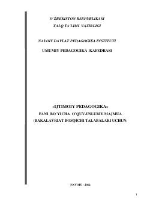

IPIjtimoiy pedagogika fani bo'yicha bakalavriat talabalari uchun mo'ljallangan o'quv-uslubiy majmua.
Ushbu o'quv-uslubiy majmua Navoiy davlat pedagogika instituti bakalavriat bosqichi talabalari uchun mo'ljallangan. Unda ijtimoiy pedagogika fanining nazariy asoslari, o'quv dasturlari, ma'ruza matnlari va baholash mezonlari batafsil yoritilgan.